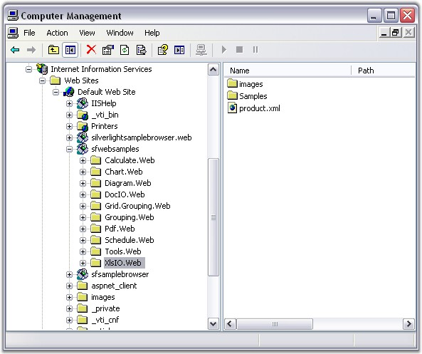
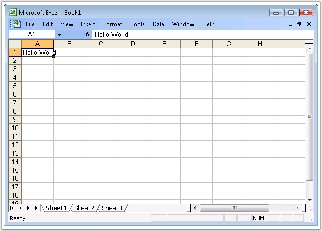

Now, you have created a ASP.NET application (refer to Creating a Platform Application). This section covers the following:
· Deploying Essential XlsIO in an ASP.NET Application
· Creating and adding an Excel document (with worksheets) to the Application
Deploying Essential XlsIO in an ASP.NET Application
This section provides information and instructions for deploying ASP.NET applications that use Essential XlsIO for ASP.NET. This is in addition to the section on Deploying Essential Studio for ASP.NET (Common-->Deploying Essential Studio for ASP.NET) in the Getting Started guide. Essential XlsIO ships with .NET Framework 2.0 (Visual Studio 2005) version of the C# and VB.NET samples which are installed beneath 2.0 directories. During installation, application directories are created in IIS for each of the C# and VB.NET samples.

Figure 20: Sample Application Directories in IIS
The following steps will guide you to deploy Essential XlsIO in an ASP.NET application:
1. Marking the Application Directory
The appropriate directory, usually where the aspx files are stored, must be marked as Application in IIS.
2. Syncfusion Assemblies
The following Syncfusion assemblies need to be in the bin folder that is beside the aspx files:
· Syncfusion.Core.dll
· Syncfusion.Compression.Base.dll
· Syncfusion.XlsIO.Base.dll
They can also be in the GAC, in which case, they should be referenced in the Web.config file, using the code as follows:
|
[ASPX]
<configuration> <system.web> <compilation> <assemblies> <add assembly="Syncfusion.XlsIO.Base, Version=x.x.x.x, Culture=neutral, PublicKeyToken=3D67ED1F87D44C89"/></assemblies> </compilation> ... </system.web> </configuration> |
 Note: X.X.X.X in the above code corresponds to the
correct version number of the Essential Studio version that you are currently
using.
Note: X.X.X.X in the above code corresponds to the
correct version number of the Essential Studio version that you are currently
using.
 Please
refer to the document in the following location, for step-by-step process of
Syncfusion assemblies deployment in ASP.NET:
Please
refer to the document in the following location, for step-by-step process of
Syncfusion assemblies deployment in ASP.NET:
http://www.syncfusion.com/support/user/uploads/webdeployment_c883f681.pdf
Note: 1) Application with Essential XlsIO needs
the following dependent assemblies for deployment:
· Syncfusion.Core.dll
· Syncfusion.Compression.Base.dll
· Syncfusion.XlsIO.Base.dll
2) All the assemblies should be built from the same version.
3) Missing out Compression.Base will raise Application Exception - TypeInitialization.
3. Data Files
If you have an xml, mdb, or other data files, ensure that they have sufficient security permission. Authenticated users should have full control over the files and directories, in order to give ASP.NET code, enough permission to open files at run time.
The following JavaScript files should be added in the ASPX page:
· jquery-1.3.2.min.js
· MicrosoftAjax.js
The above-mentioned script files are added by using the following code:
|
[ASPX]
<script src="<%= Url.Content("~/Scripts/jquery-1.3.2.min.js") %>" type="text/javascript"></script> <script src="<%= Url.Content("~/Scripts/MicrosoftAjax.js") %>" type="text/javascript"></script> |
With this step, the process of deploying XlsIO in the ASP.NET application gets completed.
Creating and Adding an Excel Document (With Worksheets) to the Application
The following code snippet will guide you to create and add an Excel document to this application.
|
[C#]
// New instance of XlsIO is created.[Equivalent to launching MS Excel with no workbooks open]. // The instantiation process consists of two steps.
// Step 1: Instantiate the spreadsheet creation engine. ExcelEngine excelEngine = new ExcelEngine();
// Step 2: Instantiate the excel application object. IApplication application = excelEngine.Excel;
// A new workbook is created.[Equivalent to creating a new workbook in MS Excel). // The new workbook will have 3 worksheets. IWorkbook workbook = application.Workbooks.Create(3);
// The first worksheet object in the worksheets collection is accessed. IWorksheet sheet = workbook.Worksheets[0];
// Inserting sample text into the first cell of the first worksheet. sheet.Range["A1"].Text = "Hello World";
// Saving the workbook to disk. workbook.SaveAs("Sample.xls", ExcelSaveType.SaveAsXLS, Response, ExcelDownloadType.Open);
// Closing the workbook. workbook.Close();
// Dispose the Excel engine excelEngine.Dispose(); |
The sample Excel document created through the above procedure is shown below.

Figure 21: Spreadsheet created in the ASP.NET Application